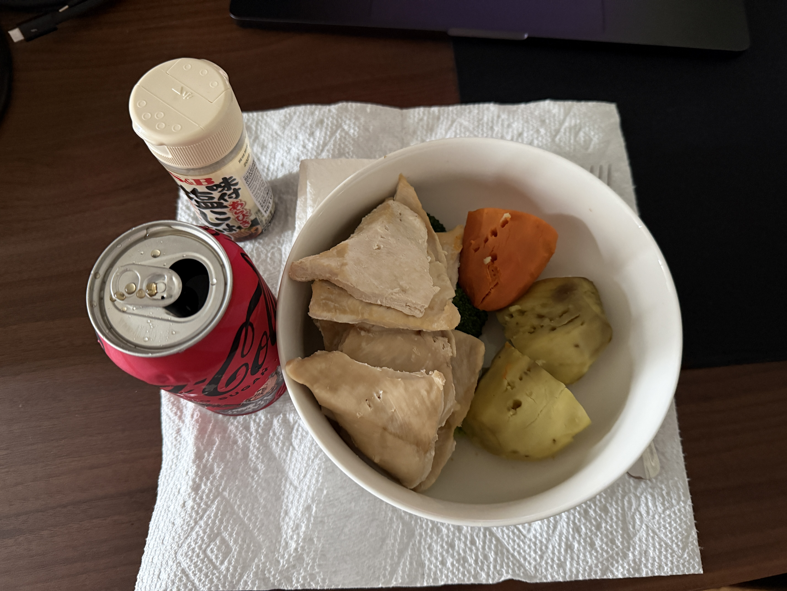
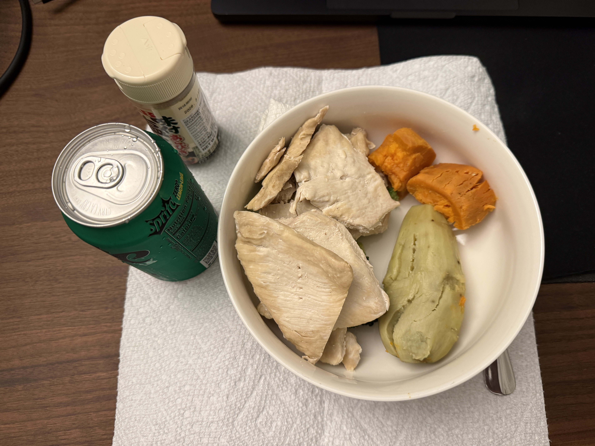
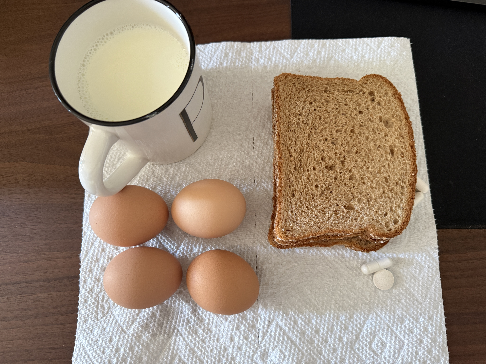

Very handsome boy in berklee, probably the most handsome boy in the department.
I’m 20 years old, and I started making music when I was 16. I’m double majoring in Electronic Production and Design (EPD) and Music Production and Engineering (MP&E) at Berklee College of Music. Music production was already one of my strengths before I came to Berklee. Now I want to build a solid foundation in mixing and sound design. I sing and play piano, guitar, and flute.
Outside of music, I love lifting weights and sleeping. I’m also really into gaming, but my double major keeps me so busy that I haven’t played a PC game in ages. Now that GTA 6 is out, I’d love to play it. I’m just not sure when I’ll find the time, especially since I’m working on my first album.
Lately, I’ve been trying to get leaner for modeling. The pressure to look a certain way can feel pretty intimidating, so I’m focusing on getting stronger, building muscle, and gradually lowering my body fat while keeping my health in mind.


